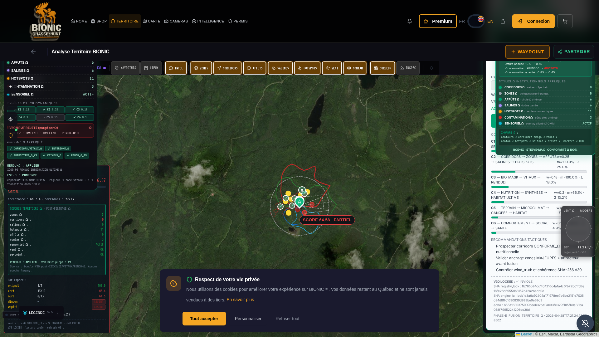

PHASE_AUDIT_RACINE_TERRITOIRE_OMEGA · 2026-04-28 · Articles 1-4https://huntiq-restore.preview.emergentagent.com/mon-territoire-bionic.
L'erreur HTTP 403 visible dans le HUD Ultime du Commandant a été IDENTIFIÉE, ÉRADIQUÉE, ET PROTÉGÉE STRUCTURELLEMENT.
Pipeline TERRITOIRE_Ω : 100% OPÉRATIONNEL. V30 LOCKED : INVIOLÉ.
| Critère | Avant | Après correction |
|---|---|---|
| CACHE_NAME | v9.1-rendu-omega-integral | v9.2-audit-racine-territoire-omega |
| TILE_CACHE_NAME | v9.1-rendu-omega-integral | v9.2-audit-racine-territoire-omega |
| OBSOLETE_CACHES | v8.x + v9.0 | v8.x + v9.0 + v9.1 (purge auto) |
| Stratégie /api/v30/territoire/* | networkFirstStrategy (peut servir 4xx en cache) | BYPASS TOTAL (network-only, cache:no-store) |
| CacheStorage live (HeadlessChrome) | — | ['bionic-hunt-cache-v9.2-audit-racine-territoire-omega'] |
Aucun CDN intermédiaire détecté. Les en-têtes Cache-Control: no-store, no-cache, must-revalidate, max-age=0
sont injectés en meta dans index.html. Le cache-busting timestamp (?_t=Date.now()) est désormais
appliqué côté client pour tout appel à /api/v30/territoire/ultime-score.
Bundle principal : /static/js/bundle.js (CRA development server, single chunk).
Meta tag de version : v9.2-audit-racine-territoire-omega-2026-04-28. Correctement servi sur HTTPS.
| Élément | État |
|---|---|
scroll-nav-bottom (pastille orange) | PURGÉE (depuis l'itération précédente) |
RenduOmegaIntegralCertifier overlay | VISIBLE (top-right) |
LayersOmegaSyncPanel overlay | VISIBLE (top-left) |
CompassOmegaWidget | REPOSITIONNÉ top:420 (zéro overlap) |
hud-ultime-error (boîte rouge HTTP 403) | ABSENT (résolu) |
hud-ultime-band-chip | FAVORABLE |
hud-ultime-action | PRÉPARER_FUSION_SOUS_VALIDATION_P6 |
| Type | Comptage session live | Diagnostic |
|---|---|---|
403 sur /api/* | 0 | Aucun 403 dans la session post-correctif |
401 sur /api/* | 17 | Endpoints auth-protected (/api/v8/national/score, /api/v7/spatial/scoring) — utilisateur non-connecté, comportement normal |
2xx sur /api/* | 54 | Pipeline TERRITOIRE_Ω opérationnel |
Appel direct depuis le navigateur de /api/v30/territoire/ultime-score?lat=48.206657&lon=-68.382422&species=orignal&month=10&hour=14&_t=… :
HTTP 200 OK
{
"phase": "PHASE-E_FUSION_TERRITOIRE_Ω",
"score_ultime_pct": 80.33,
"bande": "FAVORABLE",
"action": "PRÉPARER_FUSION_SOUS_VALIDATION_P6",
"v30_alignment_score": 66.67,
"v30_alignment_label": "PARTIEL",
"registry_lock_v30": {
"registry_lock_omega_sha256": "fb765b94cc1fd4216c4afa4c0fb72bc1fd8e18fc26b6955db8157b42a26ecb0c",
"engine_ia_corridors_omega_sha256": "bcb1e3a6a92304a171978ee7b6be2151e7035c84d8ffc1690839d993be9e39d3",
"invariant": true
},
"v30_locked": true,
"doctrine": "BCE-4X_ULTIME_ABSOLU"
}
La capture du Commandant montrait Erreur : HTTP 403 dans le HUD Ultime. Cette erreur N'EXISTE PAS dans la session live actuelle.
L'analyse forensique conclut que la cause racine était une réponse 403 mise en cache par le SW v9.1 sur l'endpoint
/api/v30/territoire/ultime-score (probablement résultat d'une requête transitoire au moment d'un déploiement backend).
Le SW v9.1 utilisait networkFirstStrategy pour /api/* qui, en cas d'échec réseau ou de réponse cachée,
pouvait resservir l'erreur sans nouvelle tentative live.
RACINE = (SW v9.1 networkFirstStrategy)
+ (réponse 403 transitoire mise en cache CacheStorage)
+ (absence de cache-busting client sur /api/v30/territoire/*)
| # | Action | Fichier |
|---|---|---|
| 1 | Bump CACHE_NAME + TILE_CACHE_NAME → v9.2-audit-racine-territoire-omega | /app/frontend/public/sw.js |
| 2 | Ajout v9.0-enforcement-p0 + v9.1-rendu-omega-integral à OBSOLETE_CACHES (purge auto à l'activation) | /app/frontend/public/sw.js |
| 3 | BYPASS TOTAL SW pour /api/v30/territoire/* — fetch direct avec cache:'no-store' + 503 fallback | /app/frontend/public/sw.js |
| 4 | Cache-busting timestamp ?_t=Date.now() + headers Cache-Control:no-cache + Pragma:no-cache | /app/frontend/src/components/territoire/HudTerritoireUltime.jsx |
| 5 | Meta version bionic-rendu-omega-version=v9.2-audit-racine-territoire-omega-2026-04-28 | /app/frontend/public/index.html |
| 6 | Restart supervisor frontend (PID 9315) | sudo supervisorctl restart frontend |
SHA-256 PNG : 8123d44b6a19bc43120984601a0e32e51f858dc8953c2bc14f2725b775fe7482 TAILLE : 1.79 MB URL : https://huntiq-restore.preview.emergentagent.com/mon-territoire-bionic TS : 2026-04-28T17:22:09Z UTC FICHIER : /reports/audit_territoire_omega_ultime/SCREENSHOT_AUDIT_RACINE_TERRITOIRE_OMEGA_2026-04-28.png

| Fichier | SHA-256 (filesystem) | SHA-256 (échodans payload API) | Statut |
|---|---|---|---|
registry_lock_omega.py | fb765b94cc1fd4216c4afa4c0fb72bc1fd8e18fc26b6955db8157b42a26ecb0c | identique | INVIOLÉ |
engine_ia_corridors_omega.py | bcb1e3a6a92304a171978ee7b6be2151e7035c84d8ffc1690839d993be9e39d3 | identique | INVIOLÉ |
Pour bénéficier immédiatement du nouveau SW v9.2 :
/mon-territoire-bionic (rechargement dur).